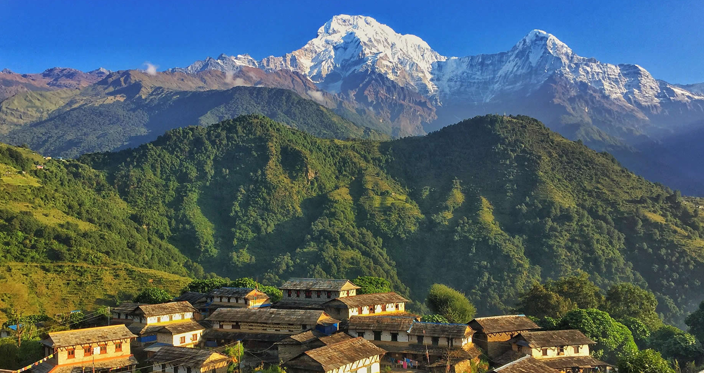
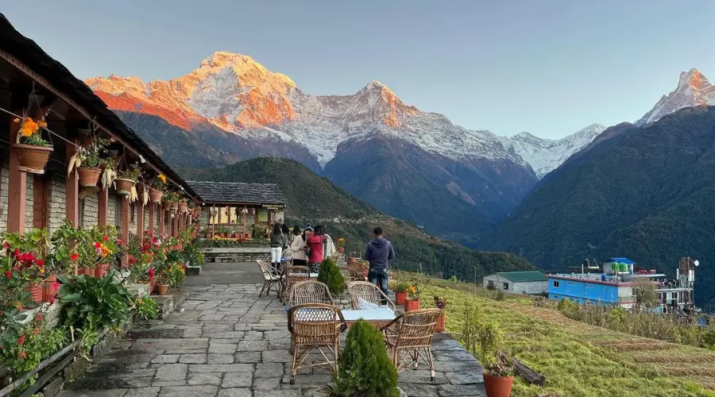
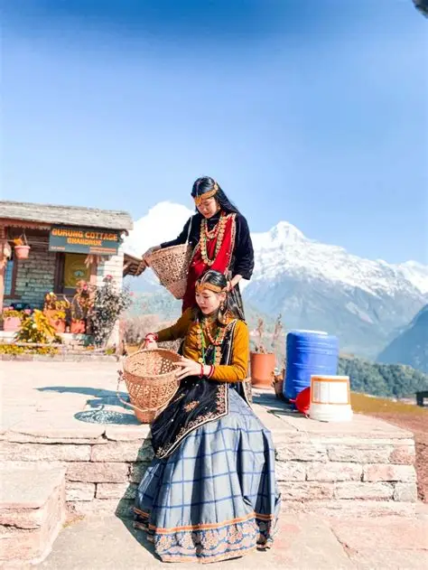

Ghandruk is a picturesque traditional village nestled in the Annapurna Rural Municipality, Kaski District of the Gandaki Province of Nepal. Situated 32 km north-west to Pokhara, this traditional Gurung settlement sits at an elevation of 2,012 meters (6,601 ft) and serves as a key stop on several iconic trekking routes, including the Annapurna Base Camp and Annapurna Circuit treks.



The peaks of Mt Annapurna South (7,219 m), Mt Machapuchare (6,993 m), Gangapurna (7,455 m) and Mt Hiunchuli (6,411 m) can be seen from the village, and it is also the gateway to the Poon hill. Gurung communities comprise the major inhabitants of the village. The village is home to Shree Meshrom Baraha Secondary School, a government school which provides education to children aged 5-18. Local attractions include the Gurung Cultural Museum and Meshram Baraha temple. During festivals, locals celebrate with music, dance, and rituals that makes a blend of animist beliefs with Buddhist and Hindu traditions.